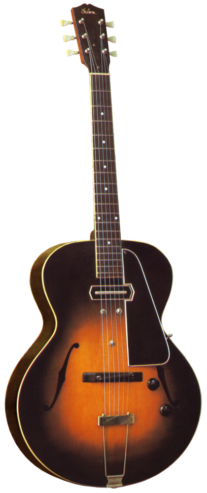
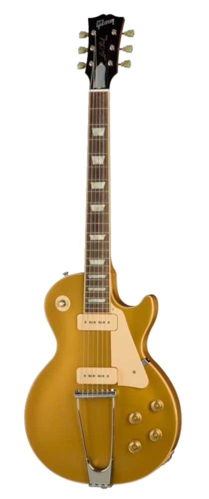
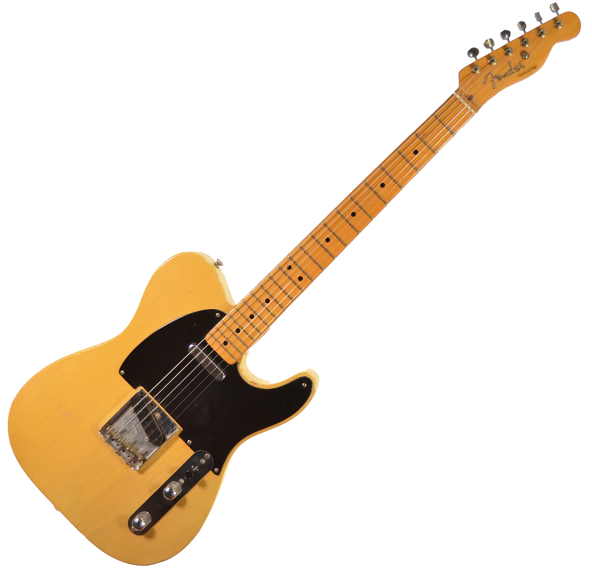
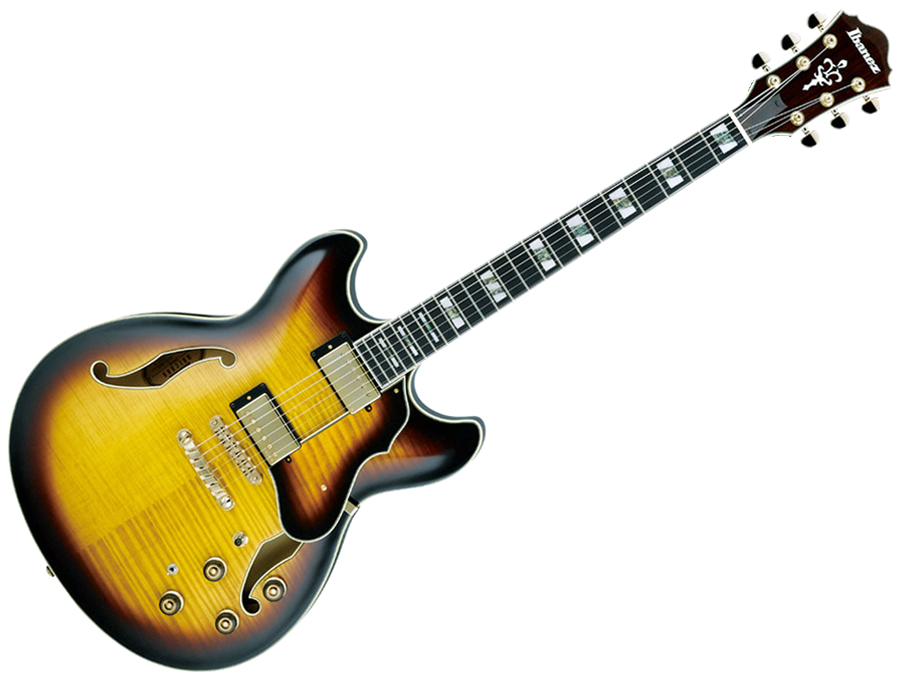

An electric guitar is a guitar that uses one or more pickups to convert the vibration of its strings into electrical signals.
The vibration occurs when a guitar player strums, plucks, fingerpicks, slaps or taps the strings.
The pickup generally uses electromagnetic induction to create this signal, which being relatively weak is fed into a guitar amplifier before being sent to the speaker(s), which converts it into audible sound.
HISTORY
Electric guitars were originally designed by acoustic guitar makers and instrument manufacturers.
The first electric guitars used in jazz were hollow archtop acoustic guitar bodies with electromagnetic transducers.
Early electric guitar manufacturers include Rickenbacker in 1932; Dobro in 1933; National, AudioVox and Volu-tone in 1934; Vega, Epiphone (Electrophone and Electar), and Gibson in 1935 and many others by 1936.
Gibson's first production electric guitar, marketed in 1936, was the ES-150 model ("ES" for "Electric Spanish", and "150" reflecting the $150 price of the instrument, along with matching amplifier).
The ES-150 guitar featured a single-coil, hexagonally shaped "bar" pickup.
A functioning solid-body electric guitar was designed and built in 1940 by Les Paul from an Epiphone acoustic archtop.
His "log guitar" shares nothing in common for design or hardware with the solid-body Gibson Les Paul later introduced in 1952.

Gibson ES-150

Les Paul 1952 Goldtop
TYPES
Solid-Body
Unlike acoustic guitars, solid-body electric guitars have no vibrating soundboard to amplify string vibration.
Instead, solid-body instruments depend on electric pickups and an amplifier (or amp) and speaker.
These guitars are generally made of hardwood covered with a hard polymer finish, often polyester or lacquer.
One of the first solid-body guitars was invented by Les Paul.
The first mass-produced solid-body guitar was Fender Esquire and Fender Broadcaster (later to become the Fender Telecaster), first made in 1948, five years after Les Paul made his prototype.
The Gibson Les Paul appeared soon after to compete with the Broadcaster.
Another notable solid-body design is the Fender Stratocaster, which was introduced in 1954 and became extremely popular among musicians in the 1960s and 1970s for its wide tonal capabilities and more comfortable ergonomics than other models.

1952 Fender Telecaster
Hollow-Body
Full hollow-body guitars have large, deep bodies made of glued-together sheets, or "plates", of wood.
They can often be played at the same volume as an acoustic guitar and therefore can be used unplugged at intimate gigs.
They qualify as electric guitars inasmuch as they have fitted pickups.
Historically, archtop guitars with retrofitted pickups were among the very earliest electric guitars.
The instrument originated during the Jazz Age, in the 1920s and 1930s, and are still considered the classic jazz guitar (nicknamed "jazzbox").
Like semi-acoustic guitars, they often have f-shaped sound holes.

Ibanez Artstar AS153AYS
CONSTRUCTION
The headstock (1) contains the metal machine heads (1.1), which use a worm gear for tuning.
The nut (1.4)—a thin fret-like strip of metal, plastic, graphite or bone—supports the strings at the headstock end of the instrument.
The frets (2.3) are thin metal strips that stop the string at the correct pitch when the player pushes a string against the fingerboard.
The truss rod (1.2) is a metal rod (usually adjustable) that counters the tension of the strings to keep the neck straight.
Position markers (2.2) provide the player with a reference to the playing position on the fingerboard.
The neck and fretboard (2.1) extend from the body.
At the neck joint (2.4), the neck is either glued or bolted to the body.
The body (3) is typically made of wood with a hard, polymerized finish.
Strings vibrating in the magnetic field of the pickups (3.1, 3.2) produce an electric current in the pickup winding that passes through the tone and volume controls (3.8) to the output jack.
Some guitars have a fixed bridge (3.4).
Others have a spring-loaded hinged bridge called a vibrato bar, tremolo bar, or whammy bar, which lets players bend notes or chords up or down in pitch or perform a vibrato embellishment.